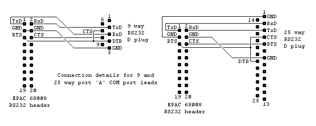
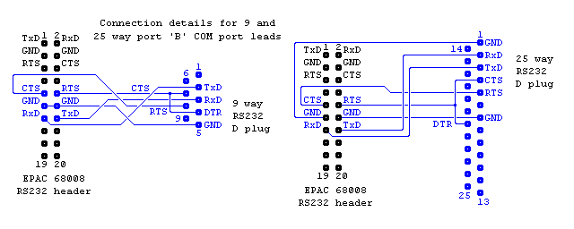

|
|
EPAC COM port lead. By Lee Davison. |
|
Either of these leads will allow you to connect the EPAC 68008 to a PC COM port using a standard null modem lead. This is for the 'A' serial port on the MC68681. This is the port used by the BIOS as it's default I/O port.
 To use the 'B' serial port on the MC68681 a lead like either of those shown below can be used.
 Both the 'A' and 'B' serial ports could be used at the same time using a lead that combines either of the 'A' and 'B' leads.
| Last page update: 10th February, 2006. | e-mail me
 |